01Обо мне
Я семейный психолог, коуч
Главное направление моей работы — отношения: пары и каждый по отдельности. Отношения с собой, с близкими, с детьми и подростками, с коллегами, с бизнесом и миром.
До психологии я много лет руководила проектами в крупных компаниях.
Мне близок образ ёжика в тумане: впереди почти ничего не видно, но после одного шага туман чуть расступается. Каждая встреча добавляет немного ясности.
Подход
- Разговор
- Мой главный инструмент — разговор. Остальные методы я подбираю под ваш запрос.
- Контакт и границы
- Мы работаем с контактом, границами, зрелостью и способностью выдерживать правду.
- Психология и коучинг
- Психология — про причины и прошлое, коучинг — про будущее и цели. Я соединяю их: вместе они дают больше.
- Метафорические карты
- Я работаю с метафорическими ассоциативными картами (МАК). Они ничего не предсказывают — помогают увидеть то, до чего головой не добраться.
Образование
Институт социальной психологии Александра Шахова
У меня диплом о профессиональной переподготовке по программам:
- «Психологическое консультирование»
- «Психологическое консультирование в коучинге»
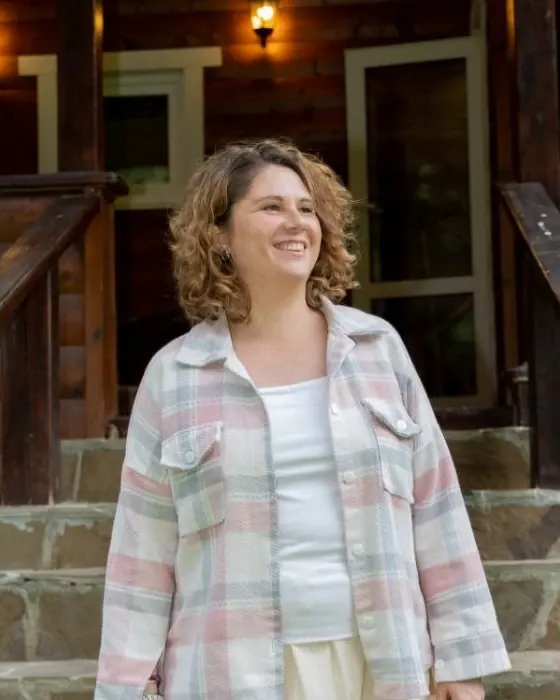
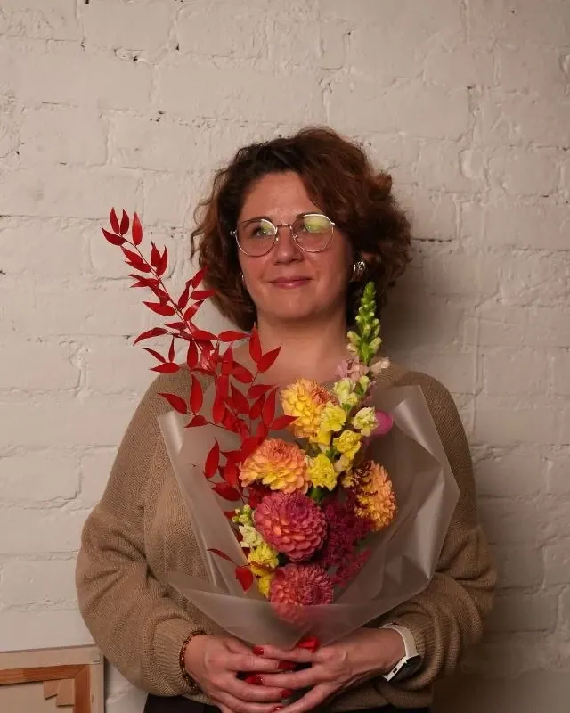
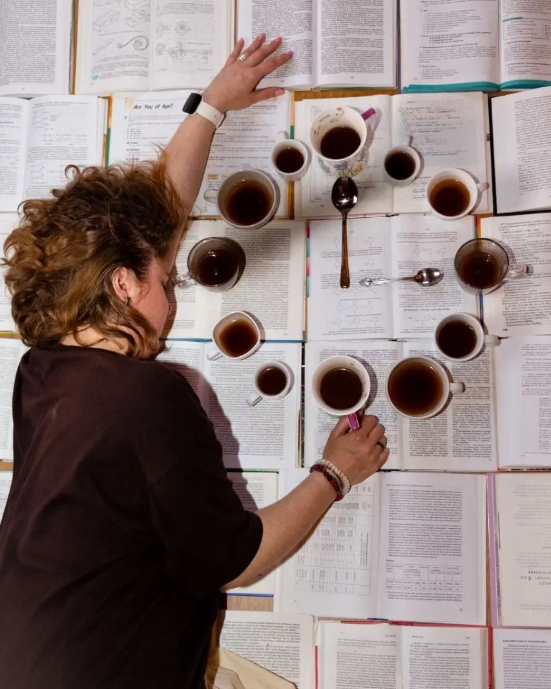
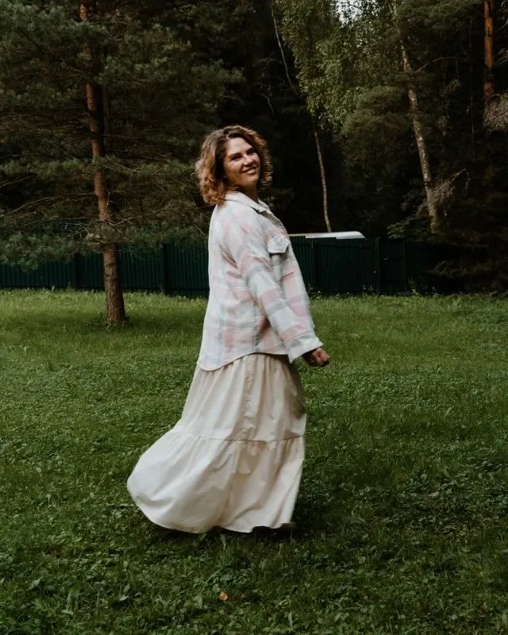
Мои дипломы и сертификаты 10
Нажмите на документ, чтобы рассмотреть крупно
Все дипломы и сертификаты (откроется в новой вкладке)Впереди почти ничего не видно. Но после одного шага туман чуть расступается.
Каждая встреча добавляет немного ясности.
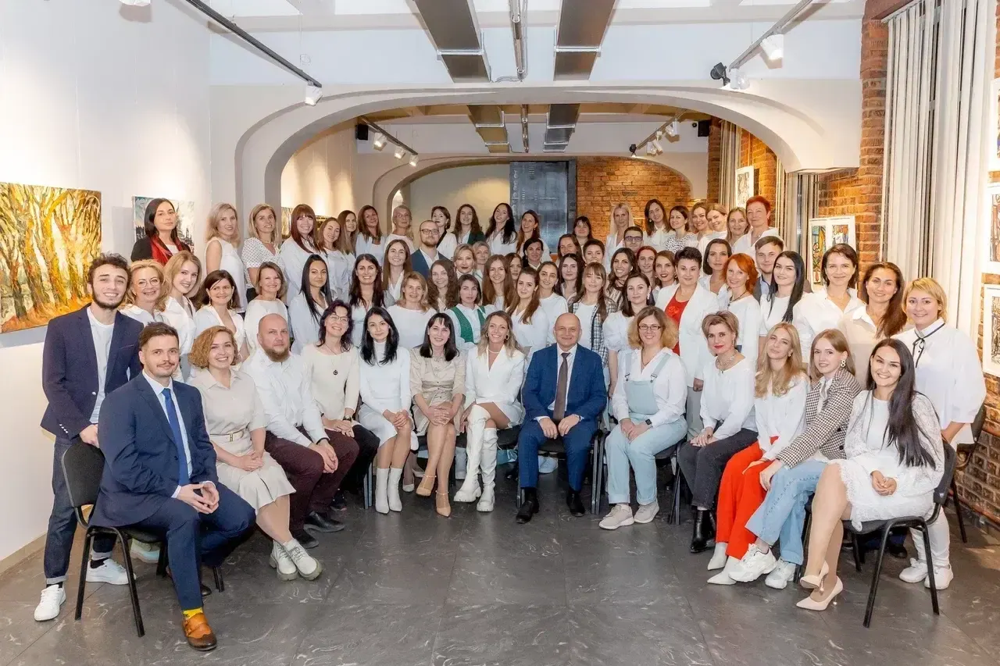
02Группы и сотрудничество
Для групп и компаний
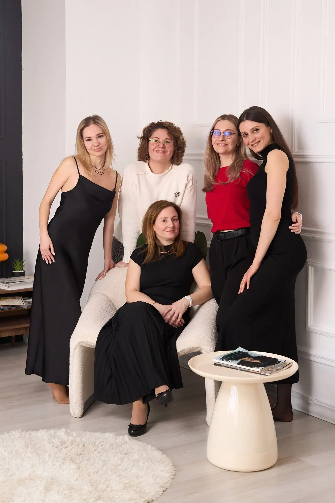
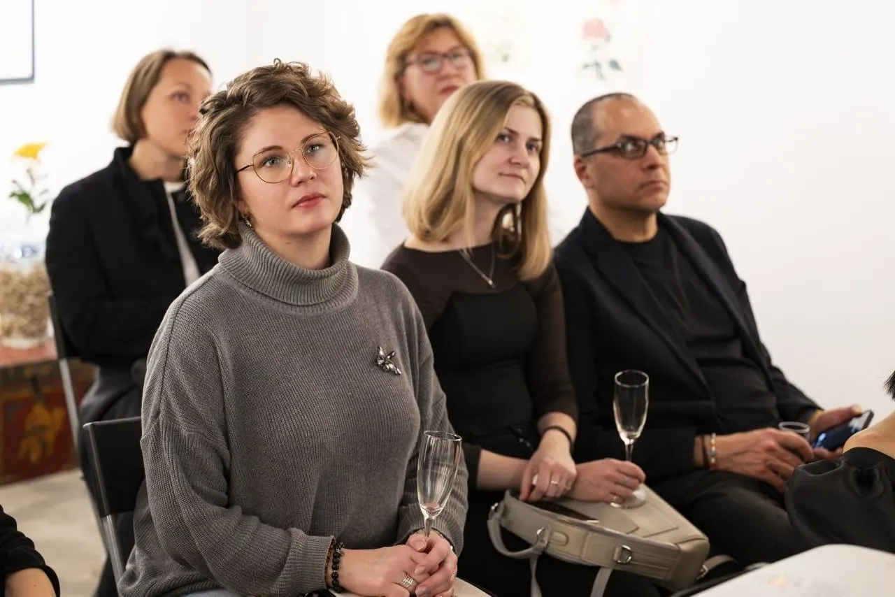
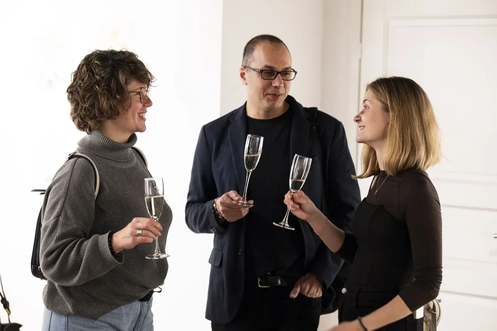
Групповые встречи
Провожу встречи в группе офлайн.
Тренинги
Провожу онлайн и офлайн.
Антикризисная работа с компаниями
Работаю с командой и процессами. Сотрудничество рассчитано на несколько месяцев.
Выступления
Читаю лекции, провожу мастер-классы, участвую в эфирах и подкастах.
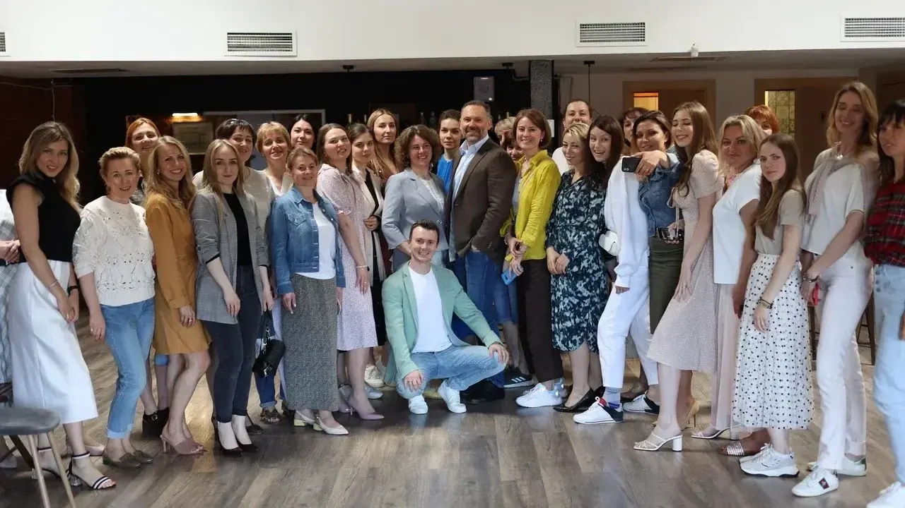
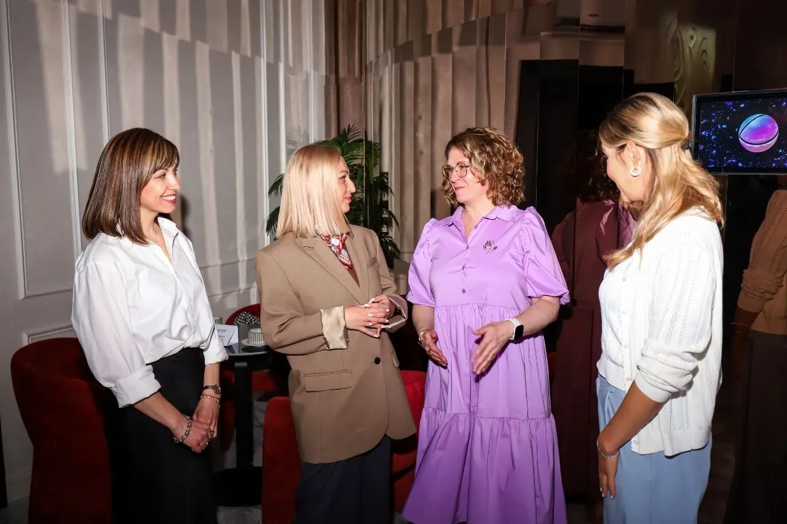
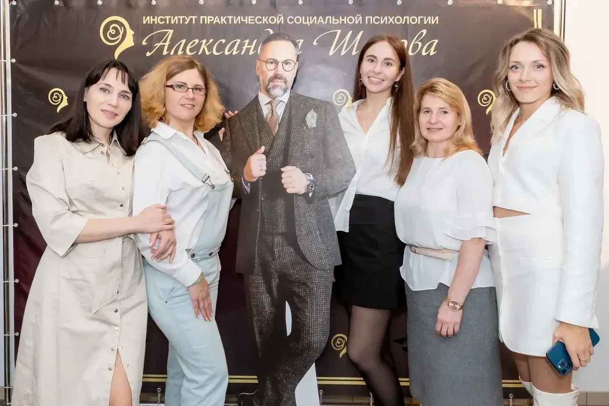
Частые вопросы
Чем психология отличается от коучинга?
Психология — про причины и прошлое, коучинг — про будущее и цели. Вместе они дают больше.
Что такое метафорические карты (МАК)?
Это карты с образами. Они ничего не предсказывают — помогают увидеть то, до чего головой не добраться.
Напишите — этого достаточно
30–40 минут знакомства. Платить нужно, только если решите продолжить.